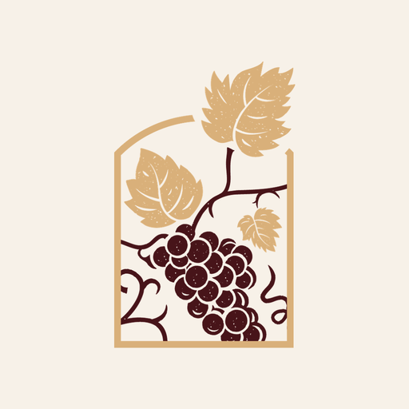
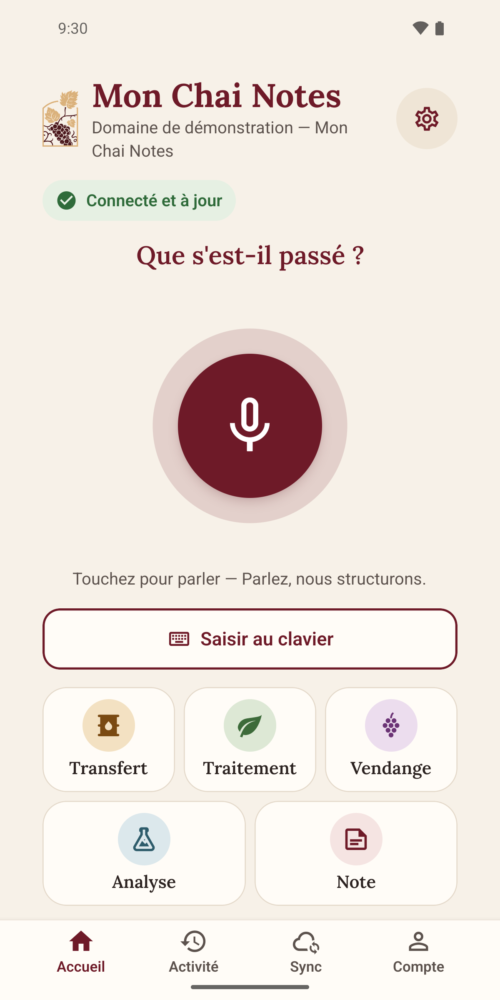
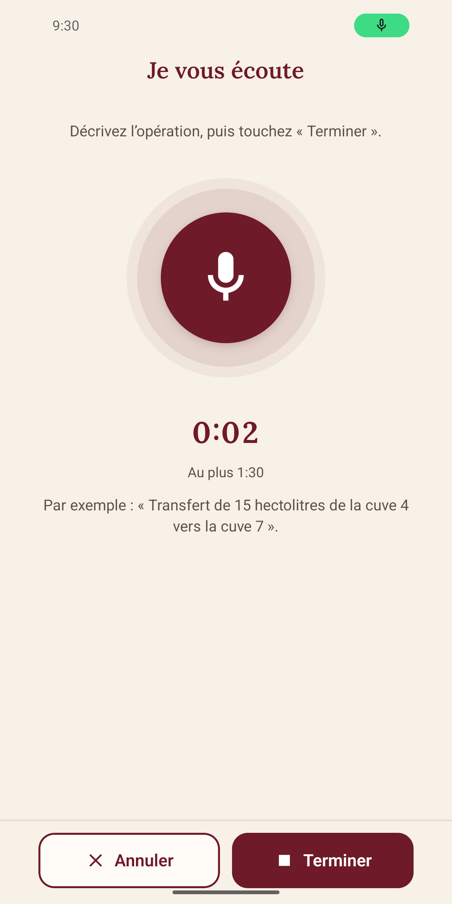
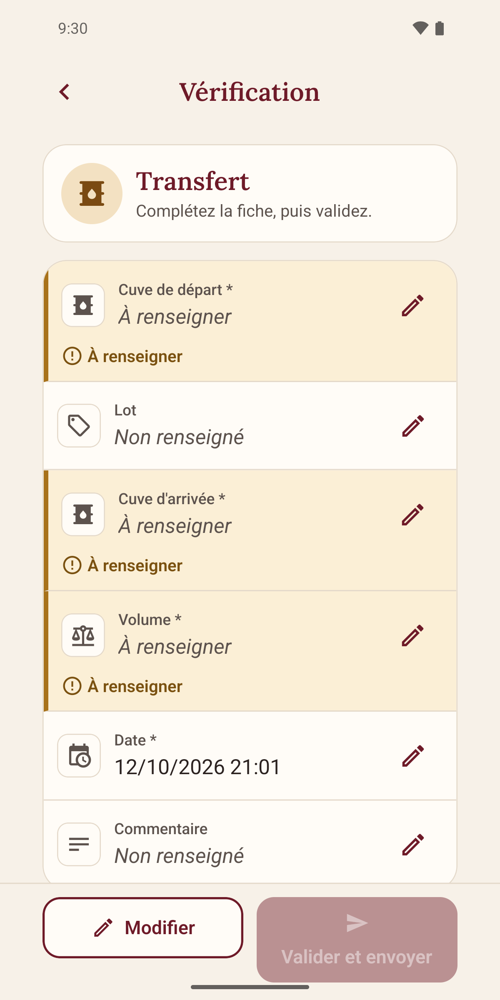
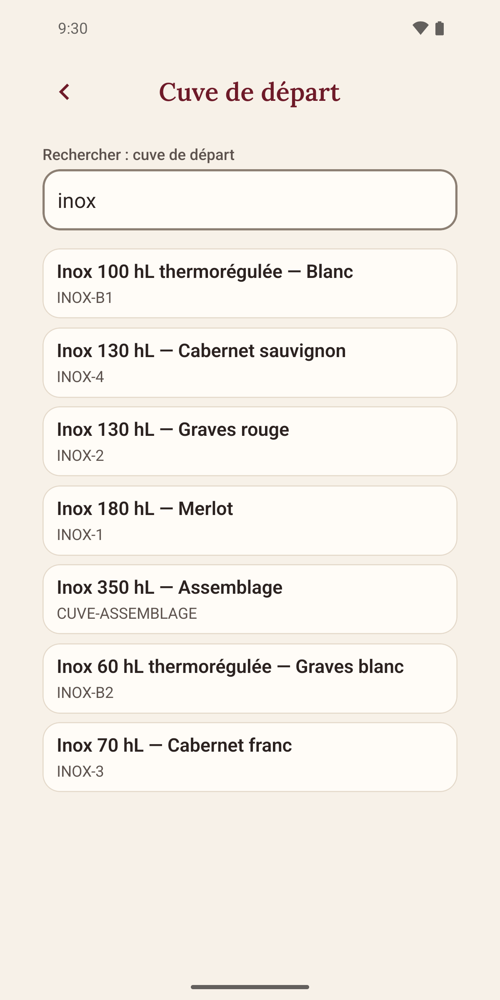
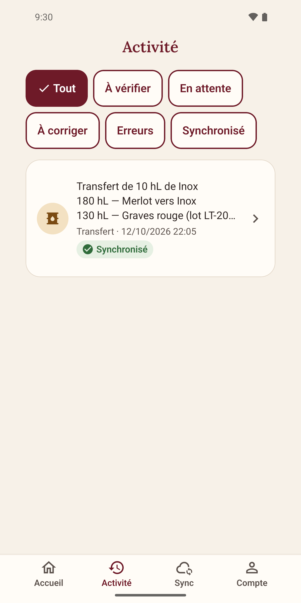

L’application de terrain de Mon ChaiApplication mobile · Android
Mon Chai Notes.Le terrain a
la parole.
À la vigne ou au chai, dictez ce que vous venez de faire. Mon Chai Notes prépare la fiche. Vous vérifiez, vous validez, puis l’opération rejoint votre compte Mon Chai.
Pour Android, depuis votre compte Mon Chai. Compte et accès mobile pour votre exploitation requis. Google Play et App Store : à venir.


Vous gardez la main sur chaque envoi.
De l’opération à la fiche
Vous êtes sur le terrain.
Votre saisie aussi.
Pas besoin d’attendre le retour au bureau pour préparer une opération. Une phrase, une fiche à relire, puis votre confirmation.
Parlez comme vous travaillez.
Touchez le micro et décrivez l’opération. Vous préférez écrire ? La saisie au clavier est disponible aussi.
« Transfert de 10 hectolitres de la cuve 4 vers la cuve 7. »
La fiche se prépare. Vous décidez.
Relisez les informations rapprochées de vos cuves, parcelles et lots. Confirmez les propositions et complétez les champs manquants avant d’envoyer.
Retrouvez l’opération dans Mon Chai.
Touchez « Valider et envoyer ». Le serveur applique les contrôles métier, puis votre saisie rejoint votre compte. Son état reste visible dans l’activité.
Les gestes du domaine,
à portée de main.
Les opérations proposées dépendent des accès ouverts pour votre exploitation.
- Transferts de vin
- Traitements à la parcelle
- Vendanges
- Analyses œnologiques
- Notes de terrain
Dans l’application
De vrais écrans.
Un parcours concret.
De la première saisie à son suivi. Touchez une capture pour l’agrandir et parcourir les six écrans.









Captures réalisées sur un domaine de démonstration, avec des données fictives. L’interface peut évoluer selon la version installée.
Au rythme du terrain
Le réseau revient.
Vous reprenez le fil.
Après une première connexion, vous pouvez préparer des saisies sur le téléphone. La transcription de la voix et l’envoi nécessitent Internet. Les écrans Activité et Sync vous permettent de suivre ce qui attend encore une action.
Un compte, les mêmes droits
Connectez-vous avec votre compte Mon Chai habituel. Les opérations disponibles respectent les droits ouverts pour votre exploitation.
Un suivi aussi côté ventes
Lorsque la facturation est ouverte pour votre exploitation, l’application permet aussi de consulter les impayés et d’enregistrer un règlement reçu.
Une validation explicite
Une fiche à vérifier reste une fiche à vérifier. Elle ne devient pas une opération enregistrée sans votre confirmation.
Emportez Mon Chai sur le terrain
Votre prochaine saisie
commence ici.
Ouvrez cette page sur votre téléphone Android. Le téléchargement passe par votre compte Mon Chai, puis vous installez l’application sur votre téléphone.
Télécharger dès maintenantConnexion requise et accès mobile ouvert pour votre exploitation.
Pas encore de compte ? Découvrir l’essai Mon Chai.
Téléchargez depuis votre compte
Touchez le bouton. Si nécessaire, connectez-vous à Mon Chai : vous serez redirigé vers le téléchargement Android.
Ouvrez le fichier sur Android
Ouvrez le fichier APK téléchargé. Android peut vous demander d’autoriser votre navigateur à installer cette application. Suivez les indications affichées, puis touchez « Installer ».
Connectez-vous et préparez une saisie
Ouvrez Mon Chai Notes, connectez-vous avec votre compte habituel et choisissez votre exploitation. Commencez à la voix ou au clavier, puis vérifiez la fiche avant de la valider.
Avant de commencer
Quelques questions utiles.
Faut-il déjà avoir un compte Mon Chai ?
Oui. Mon Chai Notes est l’application compagnon du logiciel Mon Chai. Vous utilisez votre compte habituel, et l’accès à l’application mobile doit être ouvert pour votre exploitation. Vos droits restent ceux de votre compte.
Comment installer l’application Android ?
Touchez « Télécharger dès maintenant » depuis votre téléphone Android. Connectez-vous à Mon Chai si nécessaire, ouvrez le fichier APK téléchargé, puis suivez les indications d’Android pour l’installer. Vous retrouvez les étapes détaillées juste au-dessus.
Est-elle sur Google Play ou sur l’App Store ?
Pas encore. Le téléchargement proposé ici concerne la version Android distribuée depuis votre compte Mon Chai. Les liens Google Play et App Store seront ajoutés à leur disponibilité. La version présentée sur cette page est une application Android.
Que peut-on faire sans réseau ?
Après une première connexion, vous pouvez préparer des saisies sur le téléphone. La transcription de la voix et l’envoi dans Mon Chai nécessitent une connexion. Consultez l’activité et la synchronisation pour savoir ce qui reste à traiter.
L’application enregistre-t-elle une opération toute seule ?
Non. Vous vérifiez la fiche et confirmez son envoi. Une proposition ou une information manquante doit être traitée avant validation. Le serveur applique ensuite les contrôles de Mon Chai.
Pour le traitement des données de l’application : consulter la politique de confidentialité.